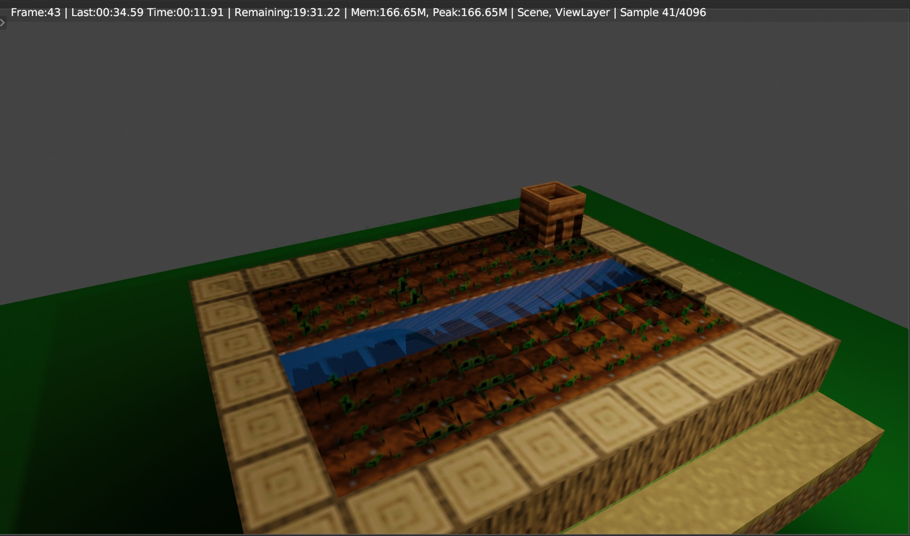

The primary goal of this project is to extend CS184's path tracer to support rendering minecraft worlds and small builds by importing minecraft scenes into the path tracer. We are currently able to load in images from the minecraft meshing into the pathtracer from project 3. This took a lot of effort and we had to use assimp (open asset import library) to read the OBJ files and import the vertices. After importing the vertices we had to create our own triangle meshes switching from assimp 3D vector points to our own Vector3D arrays. Second, we were able to load in textures and apply them to images from Minecraft. We had to do our own calculations for the textured coordinates and apply the textures we recieved from the assimp library. Finally, we have been working with blender to be able to create physcially realisitc images of minecraft scene that we can import into our pathtracer. Image below of something we were able to produce with blender.
|  |
As you can see we are able to load a Minecraft image in the cornell box but we are having trouble loading in the lights so we need to find a way to load in the lights since OBJ files only contain vertices and faces. Currently we are loading the initial scene from Cbunny.DAE this allows us to grab the lights and camera. From there we load in our own image to construct the BVH and use the OBJ file to get all the vertices and textures from the Minecraft image.
We have been able to implement the functionality to import OBJ files from Minecraft as we wanted to in week 1. Yet, we have been struggling to fix the issues of dealing with lights and the camera with the built in collad parser from project 3-1. This caused issues and has led us to be a bit behind schedule since we are working on fixing this issue. Luckily, we have been able to work on implementing textured maps and have got that to work. Which is what we wanted to finish by week 2. We plan on continuing to fix the lighting and file problems, and hope to start on implementing PBR maps to get highly realistic images. We are mainly on schedule but have fallen behind about a week so it seems unlikely we will be able to hit our stretch goals that we first set in our project proposal. Our new updated plan: First half of the Week: Be able to fix the file formatting issues so we can introduce our own lights and camera in the next couple days. Second half of the week and next week: We plan on implementing more textures so we can create PBR images.